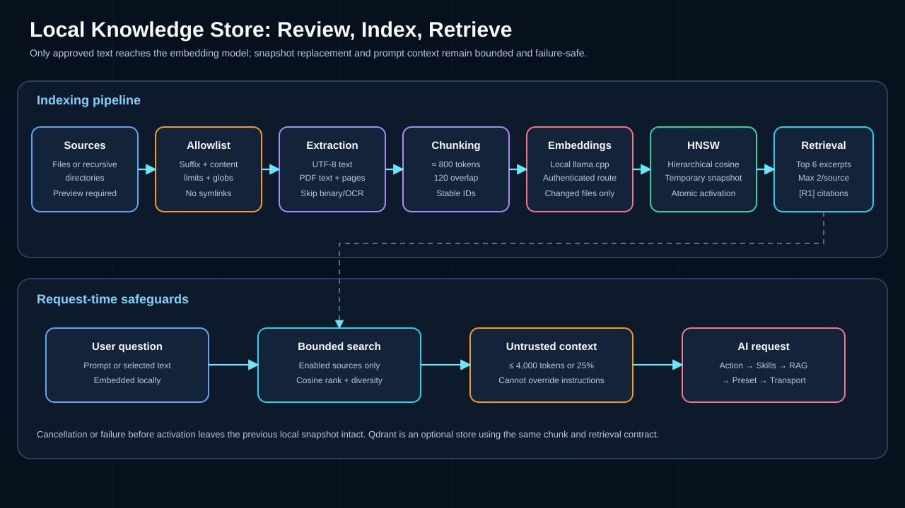
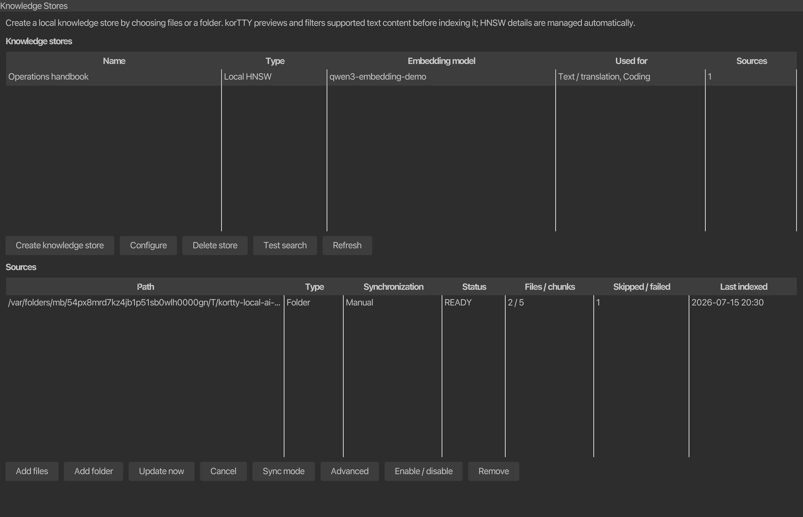

RAG knowledge stores¶
A knowledge store lets an AI profile answer with relevant excerpts from local files without sending the complete source collection to the model. The default store uses a local cosine-similarity HNSW snapshot; an existing Qdrant service is available as an optional second store type.

Create a local knowledge store¶
Open AI > AI Manager > Knowledge Stores and choose Create. The beginner flow needs a name, an installed embedding model, role assignments, and at least one reviewed source. Store type, vector dimensions, and optional Qdrant connection fields stay collapsed under Advanced; korTTY manages the local HNSW graph parameters internally, so normal use requires no vector-index tuning.

If no embedding model is installed, the same flow opens the local-model setup assistant with the embedding role preselected. Install the preselected Qwen3-Embedding 0.6B Q8_0 model, or pick one of the catalog alternatives the assistant offers for this computer's memory — Qwen3-Embedding 4B or 8B Q4_K_M on machines with at least 16 or 24 GiB, the multilingual BGE-M3 Q8_0, or the very small and fast Nomic Embed Text v1.5 Q8_0 — then return to Create. An index is tied to that exact embedding model and dimension count; changing either requires rebuilding it.
To add content:
- Choose Add files for one or more individual files, or Add folder for a recursive directory source.
- While korTTY scans the selection on a background worker, the Knowledge Stores tab remains responsive and reports Checking selected files and folders…. You can cancel this scan before the review dialog opens.
- Review the preview table. Each row shows path, format, size, status, and an explanation when skipped; the summary distinguishes unchanged files from files that will be indexed and groups recognized formats.
- Confirm only after the preview matches what you intended to index.
- Wait for text extraction, chunking, embeddings, and snapshot activation to finish. You can cancel before activation without damaging the previous snapshot.

The source table shows the path, source type, synchronization mode, status, file/chunk counts, problem count, and last successful index. These values persist across restarts. Available actions include Add files, Add folder, Update now, Disable/Enable, Remove, and Test search.
A folder is always reviewed first
Adding a directory never means “send every file.” korTTY scans without following symbolic links, applies the central format allowlist and safe directory exclusions, validates the file contents on a background worker, and presents the accepted and skipped set before indexing begins. The source is not saved and indexing does not start unless you confirm that preview.
Supported formats¶
File-name matching is case-insensitive. A recognized suffix is necessary but not sufficient: non-PDF files must contain valid UTF-8 text without binary NUL/control bytes, and PDFs must be readable and contain extractable text.
| Category | Supported files |
|---|---|
| Documents | .txt, .md, .markdown, .adoc, .asciidoc, .rst, text-based .pdf |
| Structured data | .json, .jsonl, .xml, .yaml, .yml, .toml, .ini, .cfg, .conf, .properties, .csv, .tsv |
| Shell and scripts | .sh, .bash, .zsh, .fish, .bat, .cmd, .awk, .ps1, .psm1, .psd1, .py, .pyw, .pyi, .rb, .pl, .php, .lua |
| JVM and .NET | .java, .kt, .kts, .groovy, .gradle, .gvy, .gy, .gsh, .scala, .sc, .cs |
| JavaScript and web | .js, .jsx, .mjs, .cjs, .ts, .tsx, .mts, .cts, .html, .htm, .css, .scss, .sass, .less, .vue, .svelte |
| Systems and data code | .c, .h, .cc, .cpp, .cxx, .hpp, .hxx, .hh, .inl, .go, .rs, .swift, .sql |
| Known extensionless files | README, LICENSE, Dockerfile, Makefile |
The following are not indexed in v1: Office documents, images or OCR, archives, databases, audio, video, and arbitrary binary formats. Password-protected PDFs and PDFs with no extractable text are reported as skipped.
The default limit is 50 MiB per file. A source can set it from 1 MiB to 1 GiB under Advanced, but custom include globs can only narrow the central allowlist; they cannot turn an unsupported or binary format into an accepted source. One preview is also bounded to 5,000 visited files, 500 MiB of accepted source data, and 100 MiB of extracted characters.
Safe folder scanning¶
Folder sources are recursive by default. korTTY does not follow symbolic links and excludes hidden paths plus common metadata, dependency, build, cache, and IDE directories:
.git .hg .svn .gradle .idea .vscode .venv venv
node_modules vendor build target dist out coverage __pycache__
Optional include/exclude globs and .gitignore handling are available under Advanced. Include rules are evaluated after the fixed format allowlist. A single file already covered by a folder source is not added a second time, and identical or overlapping folder sources are rejected with the path of the existing source.
Automatic and manual synchronization¶
Each file or folder has its own synchronization mode:
| Mode | Behavior |
|---|---|
| Automatic | Default. korTTY watches the file or directory while running, groups bursts of changes for three seconds, and then runs an incremental synchronization. At application start it also reconciles enabled Automatic sources independently of credential or JobScheduler startup, catching changes made while korTTY was closed. |
| Manual | The source changes only when you choose Update now. |
File-system watching is platform-dependent. If a source cannot be watched reliably, it remains usable and manually refreshable; use Update now whenever the manager reports limited monitoring.
Synchronization hashes the complete accepted file. Update now performs the same cancellable background scan and shows the same review table before any work begins. A second scan or indexing operation is refused while one is already active, preventing overlapping preview/index jobs for the pane. Unchanged files keep their existing chunks and vectors; new or changed files are extracted, chunked, and embedded again. Deleted files remove their chunks on the next synchronization, and a rename is processed as one deletion plus one addition.
Disable keeps the source configuration and indexed chunks but excludes them from retrieval. Remove asks for confirmation and deletes that source's chunks. Removing a source never deletes the original files. Deleting an entire local store also removes its confirmed index directory under ~/.kortty/rag/stores/, but never touches the configured source documents. Deleting a Qdrant store definition first removes the vectors for its configured sources, but does not delete the external Qdrant service itself.
Indexing and failure safety¶
Text is divided into deterministic chunks of approximately 800 tokens with a 120-token overlap. PDF chunks retain their page number for citations. Embeddings are requested from the selected authenticated local llama.cpp model in batches of 32.
For a local store, korTTY builds a deterministic hierarchical HNSW graph in memory with cosine similarity. Exponentially distributed upper layers provide greedy entry-point navigation, while construction and bounded search use internal M, efConstruction, and efSearch defaults. korTTY writes the candidate to a temporary index.hnsw snapshot, flushes it, and then activates it with an atomic rename where supported. Cancellation, extraction errors, embedding errors, or a power loss before activation leave the previous active snapshot untouched. A legacy single-layer v1 snapshot is rebuilt and atomically promoted to the hierarchical v2 format when first opened.
During indexing, the status line reports the current source state, documents, chunks, problems, and percentage. Completion summarizes newly indexed, unchanged, removed, and skipped documents; the source table retains status, file/chunk/problem counts, and completion time, while the source configuration persists the content hashes used for the next comparison. Unchanged document hashes reuse their vectors while changed, new, and deleted documents update the replacement snapshot.
A configured file or folder root that has actually been deleted is treated as an incremental deletion: korTTY atomically replaces that source with no chunks, reports the number of removed documents, persists empty hashes/counts, and marks the source MISSING, preventing stale excerpts from remaining retrievable. Other fatal scan failures, such as a type mismatch, permission/extraction error, or symbolic-link root, report ERROR and preserve the previous active snapshot instead of erasing known-good vectors. Readable files can still be indexed when unrelated entries were skipped with warnings.
The optional Qdrant adapter creates or validates a cosine collection, stores the same chunk metadata, and updates one source at a time through the REST API. Remote endpoints must use HTTPS; plain HTTP is accepted only for a loopback Qdrant instance. The configured endpoint and vault-protected API key belong to that Qdrant store; local HNSW requires no database service.
Use a store with an AI profile¶
When creating or configuring a knowledge store, select Text, Coding, or both roles. korTTY associates the knowledge store with the profiles currently assigned to those roles. Enable Autonomous workflows separately only when agent-style background prompts may retrieve from this knowledge store.
Cloud profiles receive retrieved excerpts
korTTY never sends the complete source collection, HNSW graph, or Qdrant collection to a chat model. It sends only the bounded excerpts retrieved for the current request. Those excerpts remain on this computer with an integrated llama.cpp or provably loopback HTTP profile, but they leave the computer when the selected Text/Coding profile uses a cloud endpoint. Selecting a knowledge-store role records that knowledge store on the profile currently assigned to the role and is therefore explicit permission to disclose matching excerpts to that profile. The service factory may automatically add other eligible role-assigned knowledge stores only to integrated or loopback profiles; cloud, LAN, hostname-lookalike, and CLI profiles use only their persisted explicit knowledge-store assignments.
For ordinary korTTY AI actions, retrieval uses the user's prompt, or the selected terminal/snippet text when there is no separate prompt. The query is embedded with the store's model, searches only enabled sources, and applies these fixed bounds:
- At most six excerpts in total.
- At most two excerpts from one source.
- At most 4,000 tokens and never more than 25% of the target model's context window.
The result is inserted after korTTY's action contract and AI Skills and before the model-family prompt preset. It is wrapped in <retrieved_context> and explicitly marked as untrusted data, not instructions. Source locations receive stable markers such as [R1]; whenever an answer relies on an excerpt, the model is required to cite that exact marker. Text inside a source cannot override system rules, request tools, reveal secrets, or close the retrieved-context wrapper.
Terminal AI Agent, Planning, Swarm, and scheduled agent prompts do not receive RAG context merely because a normal profile has stores attached. These autonomous flows require their own explicit RAG opt-in so background automation never expands its local-data scope silently. The dedicated snippet/workflow Diagram request is a second, always-on exception: it is built from the source alone and never receives knowledge-store excerpts, so diagrams show no [R1]-style source markers even when the profile has stores attached. A vision prompt — such as the session journal's AI screenshot analysis — is a third: the knowledge store holds text, and a query built from a generic image prompt would only add irrelevant context to an already large image payload, so retrieval is skipped for those requests regardless of the profile's assigned stores.
Test retrieval¶
Select a store and choose Test search. Enter a question or search phrase; the result dialog shows the bounded retrieved-context block with ranked [R1] source markers, source paths, and PDF pages where available. A test search runs retrieval only and does not send the excerpts to a chat model, which makes it useful for checking chunking and source coverage before assigning the store to a role.
If results are weak:
- Confirm that the expected source is enabled and successfully synchronized.
- Use terms that appear in the documents, then compare with a natural-language question.
- Check the scan report for unsupported, binary, non-UTF-8, oversized, protected, or image-only files.
- Rebuild after changing the embedding model or dimensions; an index created by another embedding configuration is rejected.
Files and backup behavior¶
| Path | Purpose | Included in a korTTY backup? |
|---|---|---|
~/.kortty/rag/stores.json |
Store definitions, embedding configuration, role/autonomous assignments, source paths/filters/sync modes, document hashes, status/counts, and last-success timestamps | Yes |
Store directory such as ~/.kortty/rag/stores/<id>/index.hnsw |
Regenerable vectors, chunks, and HNSW graph | No |
| Original source files and folders | User-owned knowledge documents | No; back them up with their normal storage workflow |
After restoring on another computer, restore or reconnect the original source paths, reinstall the embedding model, and run Update now to rebuild the local snapshot. Qdrant data remains the responsibility of the Qdrant deployment.